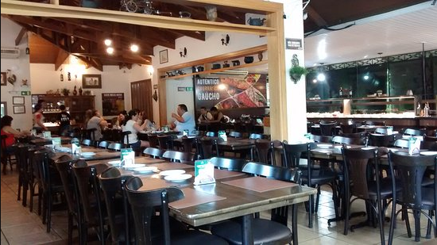

Foz do Iguaçu
Foz do Iguaçu é uma cidade encantadora, localizada no extremo oeste do Paraná, no Brasil, onde se encontram as fronteiras do Brasil, Argentina e Paraguai. Conhecida mundialmente pelas suas grandiosas Cataratas do Iguaçu, a cidade também oferece uma rica diversidade cultural, gastronômica e histórica, o que torna a visita ainda mais fascinante. Entre as maravilhas naturais, atrações culturais e uma culinária deliciosa, Foz do Iguaçu é um destino completo para todos os tipos de viajantes. Aqui está o guia completo para aproveitar ao máximo sua visita.
Principais pontos turísticos
- Cataratas do Iguaçu
- O Mirante da Garganta do Diabo, onde você pode se aproximar das quedas e sentir a força da água.
- O passeio de barco Macuco Safari, que leva os turistas a uma experiência única, passando bem perto das quedas e molhando quem se atreve.
- Parque Nacional do Iguaçu
- Usina Hidrelétrica de Itaipu
- Visita panorâmica, que proporciona uma vista incrível da barragem e da área externa.
- O Passeio de Itaipu Iluminada, que ocorre durante a noite, proporcionando um espetáculo de luzes na usina.
- Marco das Três Fronteiras
- Vista Panorâmica, que permite observar os três países ao mesmo tempo.
- Shows culturais, com apresentações de dança e música das três nações.
- Parque das Aves
- Aviários Interativos, onde os visitantes podem caminhar entre as aves.
- A Aviário das Araras, que proporciona uma experiência colorida e vibrante.
- Templo Budista
- Jardins zen, perfeitos para uma pausa tranquila no meio do seu roteiro.
- Estátuas e figuras simbólicas que são importantes no budismo.
- Centro Comercial
As Cataratas do Iguaçu são, sem dúvida, a principal atração de Foz do Iguaçu, e estão localizadas no Parque Nacional do Iguaçu. Esse Patrimônio Mundial da Humanidade é composto por 275 quedas de água que se estendem por 2,7 quilômetros e oferecem uma vista deslumbrante. O parque possui trilhas, como a Trilha das Cataratas, que leva os visitantes até mirantes estratégicos para observar a grandiosidade das quedas.
Destaques:
O Parque Nacional do Iguaçu é o lar de uma biodiversidade impressionante e oferece trilhas para quem gosta de ecoturismo e aventura. Entre as atividades imperdíveis está a caminhada pela Trilha do Poço Preto, que leva você a um lago cercado por uma densa vegetação e fauna local. Além disso, a observação de aves é uma atração à parte, já que o parque é um dos melhores locais do Brasil para birdwatching.
Outro destaque é o passeio de barco Macuco Safari, que leva os visitantes a uma aventura nas águas do Rio Iguaçu, incluindo uma aproximação emocionante das Cataratas.
A Usina Hidrelétrica de Itaipu é um marco mundial da engenharia e uma das maiores usinas hidrelétricas em operação no planeta. Localizada no rio Paraná, entre o Brasil e o Paraguai, Itaipu oferece visitas guiadas que mostram não apenas a grandiosidade da estrutura, mas também o impacto ambiental e social da usina. O Ecomuseu de Itaipu conta a história da região, das construções e das diversas interações entre os países envolvidos.
Destaques:

O Marco das Três Fronteiras é o ponto onde os três países se encontram, proporcionando uma vista única da tríplice fronteira. Esse espaço foi revitalizado e agora conta com um centro de lazer e cultura, com apresentações de danças típicas, como o tango argentino e a dança paraguaia. Durante a noite, a iluminação do marco se torna ainda mais impressionante, destacando a importância histórica e geográfica do local.
Destaques:
Localizado ao lado do Parque Nacional do Iguaçu, o Parque das Aves é um santuário dedicado à preservação de espécies nativas e exóticas. É um dos maiores parques de aves da América Latina, com mais de 1.300 aves de mais de 150 espécies diferentes. A visita permite um contato íntimo com a fauna da região, com aviários e trilhas que facilitam a observação de aves como tucanos, araras e garças. Para quem busca algo mais imersivo, há a opção de entrar nos aviários e interagir diretamente com as aves. Segundo atrativo mais visitado em Foz do Iguaçu depois das Cataratas, o É possível observar tucanos, araras, flamingos, entre outras espécies de aves, répteis e mamíferos distribuídos nos 16 hectares de mata nativa do parque.
O Parque das Aves foi criado em uma das últimas reservas de Mata Atlântica do Paraná com o objetivo de garantir a conservação, recuperação e reprodução das aves que habitam esse ecossistema.
Destaques:
O Templo Budista de Foz do Iguaçu é um local de contemplação e tranquilidade, onde você pode experimentar a paz que os budistas buscam. Com uma arquitetura impressionante e belos jardins, o templo é um lugar perfeito para relaxar e refletir. Além disso, oferece uma vista panorâmica de Foz do Iguaçu e da região da Tríplice Fronteira.
Destaques:
Foz do Iguaçu é um excelente ponto para quem deseja fazer compras, especialmente devido à proximidade com Ciudad del Este, no Paraguai. Atravessando a Ponte da Amizade, você encontra uma enorme variedade de produtos, desde eletrônicos, perfumes, roupas e muito mais, com preços mais acessíveis. No entanto, é importante verificar a legislação sobre isenções de impostos e as limitações de compras.
Principais pontos gastronômicos
- Churrasco Gaúcho 
- Churrascaria do Gaúcho: Uma das churrascarias mais tradicionais da cidade, servindo cortes especiais de carne e com uma boa seleção de vinhos.
- Culinária Internacional
- La Mafia Trattoria: Oferece pratos italianos com uma pegada contemporânea.
- Restaurante El Rancho: Uma excelente opção para quem deseja saborear a culinária argentina, com cortes de carne como o famoso bife de chorizo.
- Café e Doces
- Café Brasil: Um lugar aconchegante para um café brasileiro tradicional, além de oferecer uma deliciosa variedade de pães e doces.
A cidade é famosa pelas suas churrascarias, onde os visitantes podem degustar o tradicional churrasco brasileiro, com carnes grelhadas no espeto, acompanhadas de vinhos e molhos.
Foz tem uma forte influência de sua localização na tríplice fronteira, e seus restaurantes refletem essa diversidade.
Para uma pausa, Foz oferece alguns cafés e confeitarias deliciosas.
Principais pontos culturais
- Museu de Cera Dreamland
- Teatro Barracuda
Um museu interativo com figuras de cera de celebridades e personagens famosos. Uma visita divertida para todas as idades.
Oferece programação cultural variada com peças teatrais e apresentações musicais. Um bom local para explorar a cena cultural de Foz.